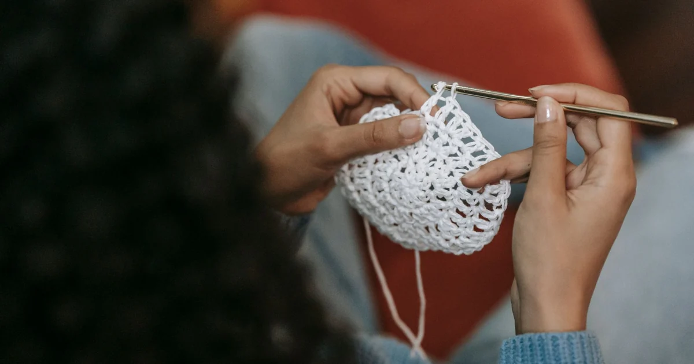
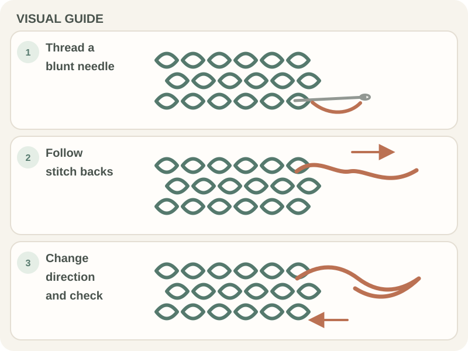

Stitches & Techniques · Beginner guide
How to Weave in Yarn Ends Neatly
Secure yarn tails with a needle by following the fabric’s stitch path without flattening or puckering it.

Weaving in ends should make a tail difficult to pull free while preserving the fabric’s stretch. The route depends on the yarn and construction.
Before you begin
Leave a workable tail when fastening off and use a needle with an eye large enough for the yarn. Follow the fiber’s care instructions.
Step-by-step instructions
- Thread the tail and pass the needle under the backs of several stitches on the wrong side, following the fabric.
- Change direction through a nearby path so the tail is less likely to slide out. Avoid pulling hard.
- For stretchy fabric, gently stretch the area as you weave so the tail does not restrict it.
- Trim close only after checking that the fabric lies flat and the woven path remains secure.

What to check
Secure without stiffening
The area should feel like the surrounding fabric, without a visible tail or stiff knot. If it puckers, loosen the path and redo it with less tension.
Frequently asked questions
How long should the tail be?
Long enough to thread and weave comfortably. The required length varies with yarn thickness and finishing method.
Should I weave in one straight line?
Changing direction can reduce sliding along one path. Keep the route gentle and avoid a bulky knot.
Can I weave ends into an open lace stitch?
Use a route that follows the pattern’s stitch paths without crossing open spaces visibly. Test the finished area and follow any finishing notes.
Should I weave in ends before washing the project?
Follow the pattern and fiber care instructions. Secure the tails first, then check the fabric after any care step that can change its stretch or shape.
Follow sturdy stitch paths without piercing the yarn
On the wrong side, pass the needle under the backs of several stitches rather than splitting the yarn strand. A split tail can make the fabric bulky and may be harder to undo. Choose a route that follows the stitch direction, then change direction through nearby stitches to reduce the chance that the tail slides out. Do not pull the path tight; the woven section should move with the rest of the fabric.
Test stretch before trimming
A stretchy rib or garment needs room to expand, while a firm square may tolerate a shorter, steadier path. Gently stretch the area in the direction it will be used and check whether the tail restricts it or appears on the front. If the fabric puckers, undo the last part and weave with less tension. Secure enough of the tail to hold, then trim only after the surface lies flat. Follow the yarn label’s care advice for the finished piece.
Choose a route that matches the stitch texture
Dense fabric offers more stitch backs to travel through, while lace and openwork have fewer hidden paths. Follow the backs of nearby stitches and avoid crossing a visible opening or pulling the tail across the front. For stripes, a tail may be easiest to secure along stitches of the same color. The best path depends on the fabric; inspect the front as you work rather than assuming the reverse-side route is invisible.
Secure the tail while preserving stretch
The woven section should stay in place without making the fabric stiff. Try the route on a swatch if the yarn is slippery, the stitches are open, or the piece will stretch. Change direction where the stitch structure allows, then flex the fabric gently and look for the tail on both sides. If it shows or puckers, undo part of the route and weave with less tension. Trim only after the fabric returns to its natural shape.
Consider how the finished piece will be used
An end on a decorative motif may need a different hidden route from one on a garment or blanket that will be stretched and washed. Follow any finishing instruction in the pattern and the care advice for the fiber. A route that looks secure on a small, flat swatch may loosen when the fabric is pulled in use, so flex the finished area gently before trimming. If the tail shows through to the front, undo only that section and choose a path that follows the stitch backs more closely.
Common mistakes and how to fix them
- Piercing the yarn plies repeatedly. This can create a bulky lump. Guide the needle under stitch backs instead of through the yarn itself.
- Pulling the tail tight. The fabric puckers and may lose stretch. Leave the woven path relaxed and test the area before trimming.
- Trimming before checking the front. A short tail can work free. Inspect both sides and flex the fabric before cutting close.
Tips that make it easier
- Use a blunt tapestry needle sized to pass through the stitch backs without forcing them apart.
- Change direction once or more where the fabric allows, but avoid building a thick knot.
- For open or stretchy work, inspect the route from both sides while the fabric is gently extended.
A useful next step
Check the pattern’s instructions against a short sample before continuing, then follow its stated stitch and edge rules.